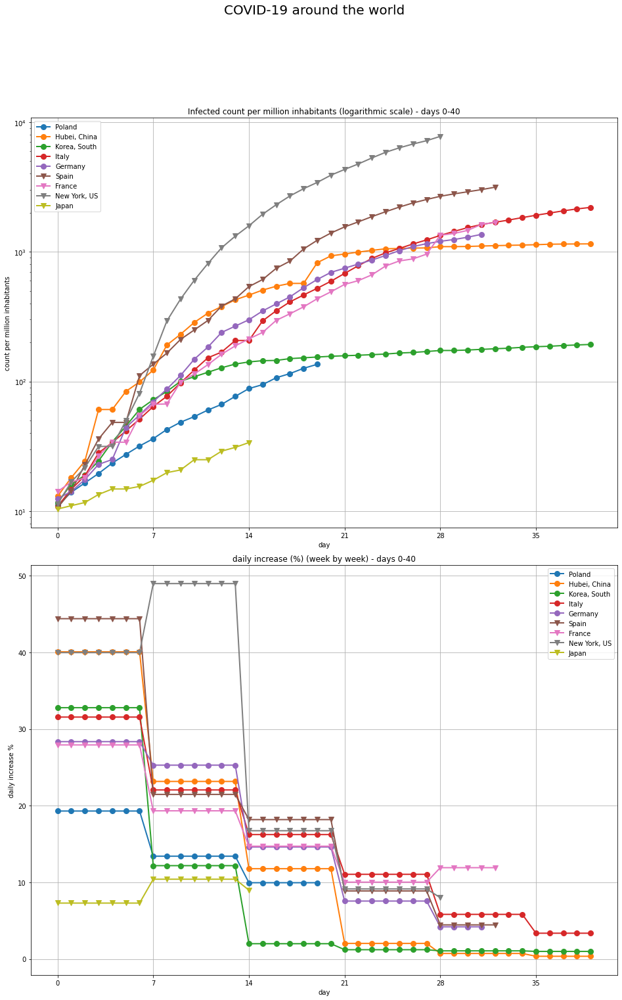

I analyzed time series of confirmed COVID-19 cases in different countries around the world. For (almost) every country in the world I had a list of dates and count of coronavirus cases confirmed by the test outcome. I used the data from Kaggle Novel Corona Virus 2019 Dataset with addition of more detailed data for my home country - Poland (from KWIRUS.pl) and some statistical data (GDP, population, population density, average yearly temperature) from Wikipedia.
I wanted to be able to compare how the coronavirus pandemic develops in various countries. I accounted for various factors: different population of the country, different dates the coronavirus reached the given country etc. I wanted to have a simple tool with which I could look at any two countries and compare them.
I was inspired by the analysis of Mark Handley from UCL. My methodology was similar: analyzing confirmed cases count on logarithmic scale, computing the daily increase rate (%) as the angle on the plot of confirmed cases in time with logarithmic scale. I went one step further and used machine learning: I clustered time series for countries with DBSCAN algorithm. In this way I extracted several groups of patterns followed by different countries.

Here are 4 plots that are basic tools of analysis of confirmed cases for a given country. In this cases it is Italy. Italy was the first country in Europe to have a major coronavirus outbreak. The first 2 plots in the upper row are just standard time series of cumulative number of cases (left) and daily new cases (right). The scale is linear. The exponential grow makes it difficult to show more details. However, the daily new cases (right) has started to decline a few days ago – the peak is clearly visible.
The biggest plot (second row) shows the same data as the plot on the left but has logarithmic scale. In order not to analyze noise I choose as the beginning of pandemic (day 0) the day the cumulative number of cases was 100 or above. This is quite standard approach accross many analysis which can be found online.
There are a few straight lines fitted to the curve. Each line represents an exponential function with different parameters. It seems that:
The last last plot shows daily increase (in %) as it slowed down from above 40% in the begining to 3%.
For me the plot indicates that the major factor that contributed to the tragic situation in Italy was not stopping the spread in first 2 weeks where the daily increase rates were extremely high.
The next step of the analysis was comparing multiple countries together on one plot. I selected a few countries (China, Italy, Spain, US etc.) which have been making headlines recently and my home country – Poland. For China I restricted data to Hubei province, for the US – to New York state.
Here are the major countries plotted together. I made a few changes to the plots which make the visulization nicer and easier to look at:
Here are the key observations:
Finally having established good methods to plot countries together I switched to machine learning. I wanted to cluster countries so that countries with similar behaviour could be detected automatically. Clustering is a machine learning technique of automatically detecting patterns in the data. For more technical details please read the section 5. Clustering - technical details
Here are the clustering results. The first plots are the same as the previous plots comparing different countries. This time the lines with the same color correspond to the countries in the same cluster. Below the plots there is a table with basic information about every cluster.

| cluster | countries | cluster description | average GDP per capita nominal ($) | average yearly temperature (°C) | average daily increase (%) week 0 | average daily increase (%) week 1 | average daily increase (%) week 2 | average infected count per million week 0 | average infected count per million week 1 | average infected count per million week 2 |
|---|---|---|---|---|---|---|---|---|---|---|
| N/A | averages for all 73 analyzed countries | N/A | 25 525$ | 14°C | 28% | 14% | 11% | 53 | 157 | 442 |
| outside cluster | Bahrain, Hubei, China, Denmark, Djibouti, Estonia, Israel, Lebanon, Oman, Qatar, Slovenia, Trinidad and Tobago, New York, US, Kosovo | noise points not belonging to any cluster | 30 331$ | 17°C | 38% | 15% | 10% | 79 | 257 | 741 |
| cluster 0 | Ireland, Norway, Turkey | extremely high increase in week 0 (43%) and quite efficient slowing down in week 1 (but still high - 19%). Slowing down in the week 2 is substantial - to 11%. | 54 901$ | 7°C | 43% | 19% | 11% | 92 | 309 | 658 |
| cluster 1 | Armenia, Australia, Austria, Belgium, Bosnia and Herzegovina, Chile, Croatia, Czechia, Finland, Germany, Lithuania, Moldova, Portugal, Romania, Serbia, Spain, Switzerland | High increases in week 0 (31%) followed by high increase in week 1 (18%) and lower but still above average in week 2 (13%). This is quite a diverse cluster and cluster 2 and cluster 3 are subparts of it with more specific behaviour. However it contains a lot of Western European countries with moderate climate and quite high GDP | 28 674$ | 9°C | 31% | 18% | 13% | 59 | 203 | 518 |
| cluster 2 | Canada, France, Italy, Netherlands, Panama, United Kingdom | High increases in week 0 (29%) not slowed down much in week 1 (22%). Week 2 is also high - 15%. High GDP (Western Europe mostly) and moderate climate | 38 426$ | 10°C | 29% | 22% | 15% | 46 | 182 | 482 |
| cluster 3 | Dominican Republic, Ecuador, Iran, Latvia, Mauritius, New Zealand, North Macedonia, Sweden | Extremely high increase in week 0 (36%) slowed down more efficiently than cluster 2 (to 12% and then to 8%). Much lower GDP than cluster 2 and 1 | 18 611$ | 14°C | 36% | 12% | 8% | 68 | 152 | 266 |
| cluster 4 | Greece, Korea, South, Uruguay | High increase in week 0 (28%) followed by slowing down to 12% | 22 811$ | 15°C | 28% | 12% | 5% | 48 | 105 | 140 |
| cluster 5 | Azerbaijan, Bulgaria, Costa Rica, Hungary, Malaysia, Poland, Saudi Arabia, Slovakia, Tunisia | A lot of Central Eastern European countries and countries with warm climate. Countries started slower from the beginning (21%) and decreased to 10% in week 1. Moderate average GDP. | 12 824$ | 16°C | 21% | 10% | 6% | 33 | 65 | 94 |
| cluster 6 | Albania, Brazil, Peru, United Arab Emirates | Countries which kept the increase at around 14% for 3 weeks. Warm climate. | 14 741$ | 21°C | 14% | 15% | 13% | 22 | 60 | 167 |
| cluster 7 | Argentina, Jordan, South Africa, Thailand | Similar start to cluster 6 (15%) with slowing down in week 1. Warm climate. | 7 041$ | 19°C | 15% | 5% | N/A | 22 | 32 | N/A |
| cluster 8 | Georgia, Japan, West Bank and Gaza | Countries which kept the increase at around 9% for 3 weeks. Very diverse economically | 16 111$ | 13°C | 9% | 9% | 9% | 17 | 32 | 52 |
| cluster 9 | Kuwait, Singapore, Taiwan | High GDP countries with warm climate. Managed to keep extremely small increases for 3 weeks (3-6%) | 39 360$ | 25°C | 6% | 3% | 6% | 13 | 17 | 26 |
The clusters are ordered by count of confirmed cases per million inhabitants after 2 weeks (descending). It also means that the average daily increase % is lower for the last few clusters. It is worth noting that the cluster number seems to correlate with GDP per capita and average temperature. It may indicate that fewer reported cases are result of smaller testing capacity in the poorer countries. Or that transmission rate depends on the climate. Further investigation is needed which effect is dominant and truly casual - GDP or climate. GDP is correlated with climate which must be taken into account.
However, putting aside the GDP and climate correlations, this clustering method gives a few interesting insights such as the behaviour of Kuwait-Taiwan-Singapore cluster 9 or the differentation of Western European countries into a few different clusters of behaviour (clusters 0-2).
It is also worth noting that the distribution of daily increase % in the week 0 seems to be the most sparse. It tends converge for later weeks (week 1, week 2 etc.). Typical value of daily grow % for week 1 is roughly 14% and typical value for week 2 is 10-11%. In other words, the factor that makes the difference between the countries is the daily increase % in the early weeks.
What are the limitations of this analysis?
It would be nice to include other currently available data: daily count of death cases, daily count of performed tests, daily count of recovered cases. I only use confirmed cases counts, I do not compute CFR (case fatality rate) which is a crucial factor. In the future (some time after pandemic) it would be nice to include the statistics of all deaths in a country. Unreported coronavirus cases could be accounted for with increase in deaths during pandemic relative to the previous year. The availability of such data may strongly depend on the country.
Links
Here are the sources hinting the large numbers of unreported coronavirus deaths:
Around the world, countries test and detect different percentage of the coronavirus cases. Most probably some countries detect only a small sample of real cases, in other countries only most obvious cases are tested and asymptotic coronavirus carriers are undetected. Some high-tech societies (for example South Korea) are known to track and test every single contact of a coronavirus case.
It would be good if for a given country the ratio detected cases and all cases would be constant in time. In such situation we would be able to evaluate the daily increase % factor. Sadly, it may not be the cases when the pandemic overwhelms country’s health system or when the country increases its testing capability gradually as repsonse to the pandemic.
For example the official number of coronavirus cases is similar in Ecuador and in South Korea (about 190 deaths as of April 7th 2020) but the situation in these two countries is quite the opposite: in South Korea daily life is relatively unaffected whereas in Ecuador government cannot manage to collect dead bodies from the streets. It is a clear example of underreporting and overwhelmed health system.
LinksHere are links to articles describing situation in Ecuador and in South Korea
I am not an epidemiologist. I do not model the pandemic with differential equations. I only fit exponential functions to the data. I do not make any predictions for the future apart from fitting trends. As far as I know the most popular model in epidemiology is SEIR.
LinksHere are links to analysis based on variations of SEIR model:
Clustering is an unsupervised machine learning technique. Clustering algorithm finds by itself groups (so called clusters) such that objects in one group are more similar to each other than to those in other groups. Here is a good primer on clustering methods from scikit-learn library.
Here are typical results from a clustering algorithm which detected 3 clusters in the data (image source: scikit-learn)

I used DBSCAN clustering algorithm (more precisely the scikit-learn implemenation). Each clustering algorithm needs either a vectorization of the records to be clustered or a definition of a distance between the records. I used the mean relative difference in logarithm of confirmed cases counts averaged over time. I also included a small addition for the mean relative difference in daily increase % averaged over time. The purpose is of such an addition is to favour clustering countries with similar dynamics of changes not only with similar counts. The most important hyperparameter in DBSCAN algorithm is the epsilon parameter - ε . I chose the ε by hand, trying to maximize the number of clusters and minimize the number of points outside any cluster. I tested about 5 different values of ε . I use minimum sample size=3. DBSCAN has a known limitation of assuming a constant density of data points in all clusters. To overcome it I ran two additional clustering rounds:
From all the countries in the world I kept 73 countries which have:
I am Aleksandra Chrabrowa and here is my LinkedIn profile.
You can contact me via e-mail at ok.l1m3k at gmail.com